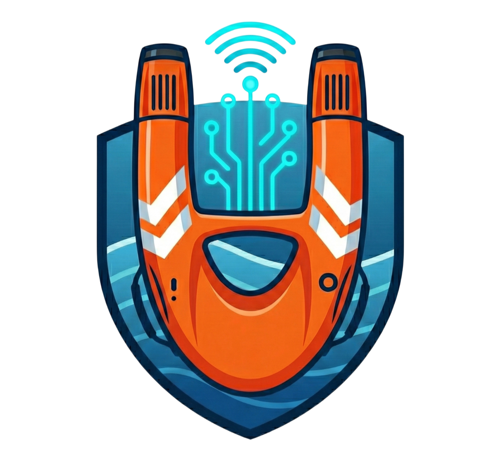

AMSRS
v2.0 Console
Offline
Export CSV
Trigger Rescue
Connect Port
Disconnect
Auto-Rescue Armed
Trigger:
Status Danger
IR Limit >
°C
Spike >
cm
Cooldown:
s
Guardian:
disconnected
Water Displacement
--
cm
Baseline: -- cm
Ambient Temp
--
°C
Enclosure internal
Target IR Temp
--
°C
Surface thermal signature
Operational State
Awaiting Data
Active alerts & modes
Live Telemetry Graph
Serial Console (115200)
Clear